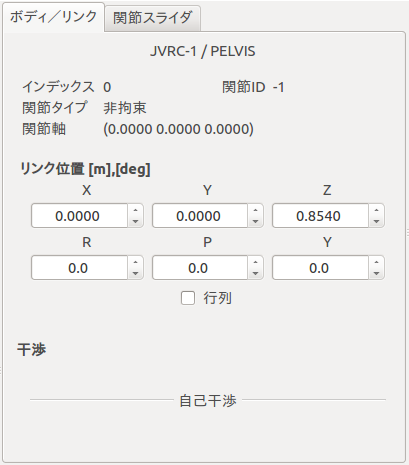
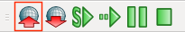
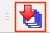
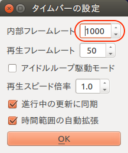

シミュレーションの実行¶
この節ではシミュレーションプロジェクトを作成する方法について解説します。

モデルを開く¶
まず、[メニュー]-[ファイル]-[新規]-[ワールド]を選択し、ワールドアイテム「World」を追加します。
そのまま[メニュー]-[ファイル]-[読み込み]-[OpenHRPモデルファイル]を選択し、JVRC-1のモデルファイルを読み込みます。ファイル名はsamples/tutorials/JVRC-1/main.wrlです。
注釈
モデルファイルは “World” アイテム内(階層の下位)に読み込みます。 アイテムビュー内での階層関係・位置はシミュレーションの動作に影響するので注意してください。 位置が異なる場合は、アイテムビュー内のアイテムをドラッグして移動することが可能です。
モデルを読み込んだだけではロボットは表示されません。 「アイテム」と書かれたリストのJVRC-1にチェックを入れてください。 すると、以下のようにロボットが表示されるはずです。

床を追加する¶
シミュレーションを行うために、床(地面)を追加します。
Choreonoid の画面にはアイテムと表示されている領域がありますが、これをアイテムビューと呼びます。 まずアイテムビューで「World」を選択します。 次に、[メニュー]-[ファイル]-[読み込み]-[OpenHRPモデルファイル]を選択し、床のモデルファイルを開きます。ファイル名は「/usr/share/choreonoid-1.5/model/misc/floor.wrl」です。
シミュレータアイテムを追加する¶
アイテムビューで「World」を選択します。 次に、[メニュー]-[ファイル]-[新規]より「AISTシミュレータ」を選択し、AISTシミュレータ「AISTSimulator」を追加します。

シミュレーションの初期状態を設定する¶
ロボットの位置・姿勢の初期状態を設定してプロジェクトに保存しておくことで、Choreonoidを起動し直してプロジェクトを読み込んだ際に設定していた初期状態からシミュレーションを開始することが可能です。 初期状態の設定は以下の手順で行います。
ボディ／リンクビューでルートリンクの位置・姿勢を編集することができます。
関節スライダビューで関節の角度を編集することができます。

シーンビュー上でインタラクティブに編集、逆運動学を用いた編集も可能です。 インタラクティブ編集はシーンビューを編集モード(「閲覧モードと編集モード」参照)に切り替えて行います。
最後にシミュレーションバーの「現在の状態をワールド初期状態に設定」ボタンを押して初期状態を設定し、
ファイルバーの「プロジェクトを保存」するのを忘れないでください。

シミュレーションの基本設定（時間刻み、シミュレーション時間）¶
時間刻み¶
1[ms] を推奨します。時間刻みは計算速度とシミュレーション精度のトレードオフであり、コントローラの実行周期との兼ね合いも考慮して設定します。
タイムバーの設定ダイアログをボタンをクリックします。

タイムバーの設定で、内部フレームレートの値を「1000」(1ms)に設定します。

シミュレーション時間¶
無制限
アイテムビュー上で “AISTSimulator” アイテムを選択状態にします。
プロパティビューの時間範囲の値をダブルクリックして変更します。

タイムバー範囲
アイテムビュー上で “AISTSimulator” アイテムを選択状態にします。
プロパティビューの時間範囲の値をダブルクリックして変更します。

タイムバーの開始時間と終了時間を設定します。

シミュレーションを実行する¶
次に、シミュレーションツールバーの「シミュレーション開始ボタン」を押します。 これにより、画面上でモデルのシミュレーションが開始されます。

シミュレーションを実行すると下の画像のようにロボットはすぐに崩れ落ちてしまうはずです。

これは全く関節の制御をしていないためです。 これからロボットを制御するプログラムを記述し、ロボットが崩れ落ちないようにしていきます。
プロジェクトの保存¶
シミュレーションの実行が終わったら、プロジェクトを保存しておきましょう。「ファイル」の「名前を付けてプロジェクトを保存」を選択し、適当なファイル名を付けて保存します。
サンプルプロジェクトについて¶
このサンプルのプロジェクトファイルは「サンプルファイルのインストール」でダウンロードしたリポジトリの「samples/tutorials/cnoid/sample1.cnoid」に保存されています。